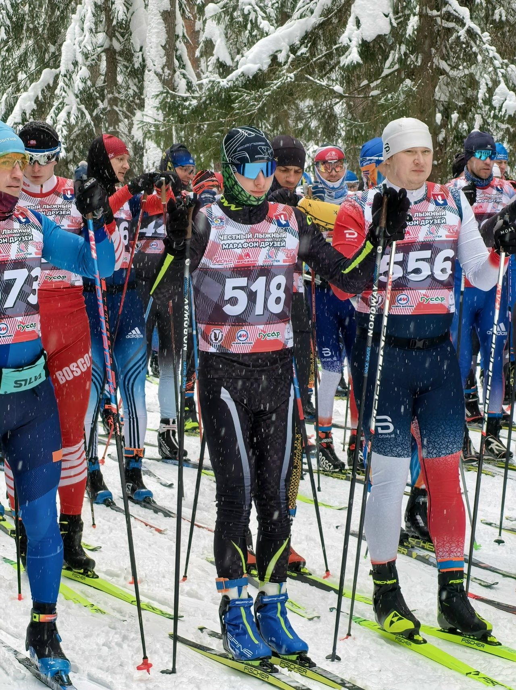

Разработчик, Python-энтузиаст
Привет! Я Никита Пузанов, занимаюсь разработкой на Python, решаю задачи по анализу данных и алгоритмам. Люблю разбираться в математике за алгоритмами и делать код понятным и чистым.
В свободное время пишу небольшие утилиты, экспериментирую с методами аппроксимации, сортировками и разными способами обработки данных.